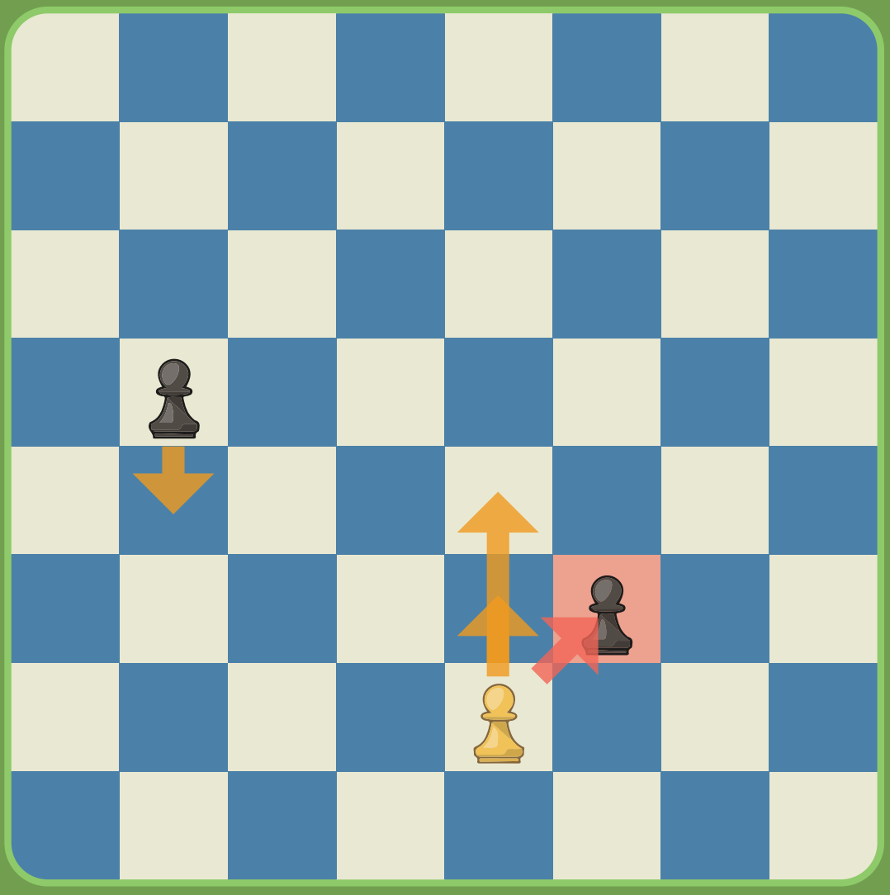
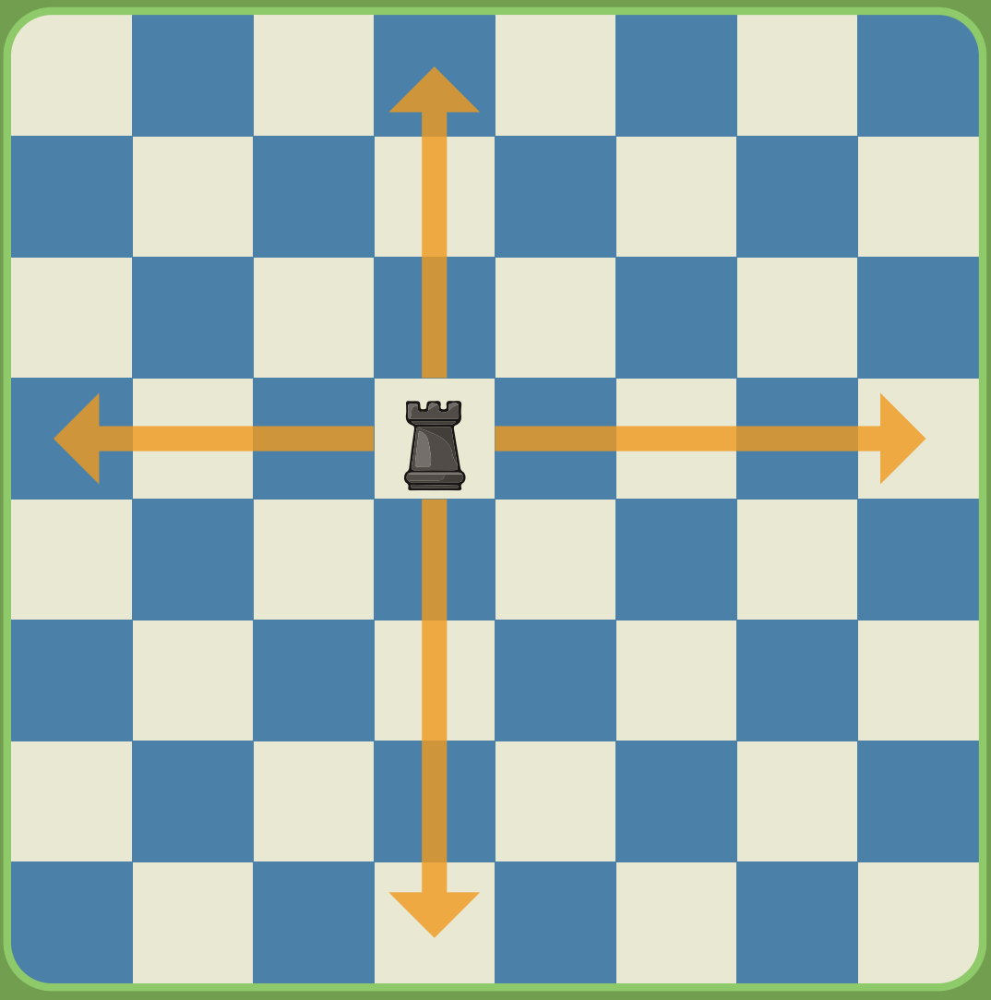
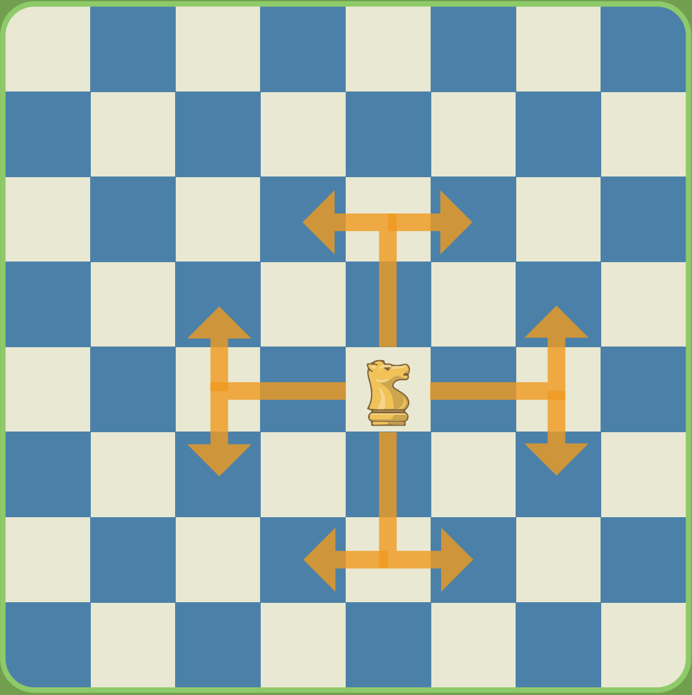
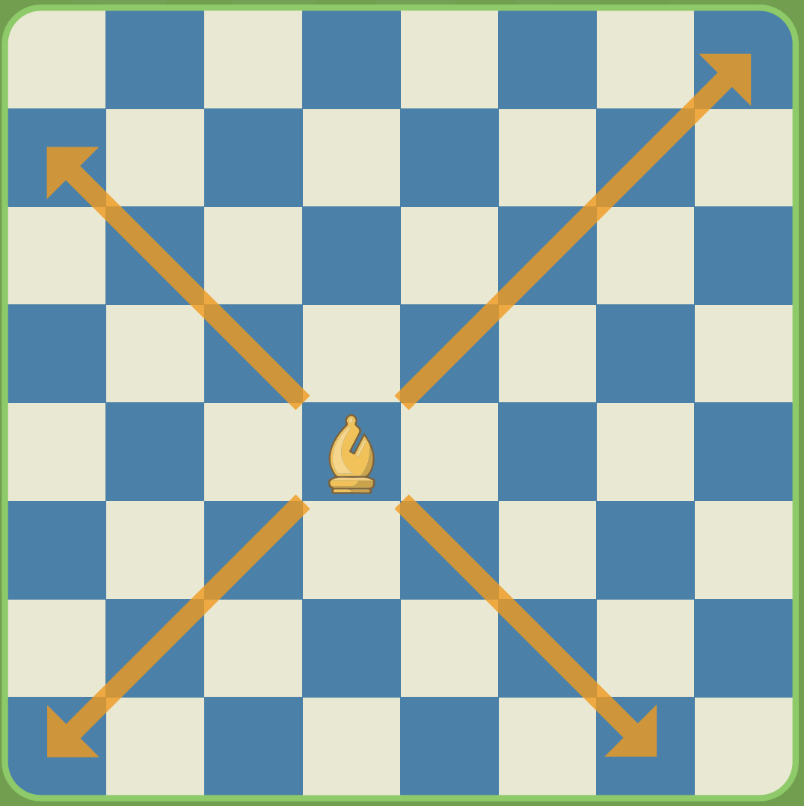
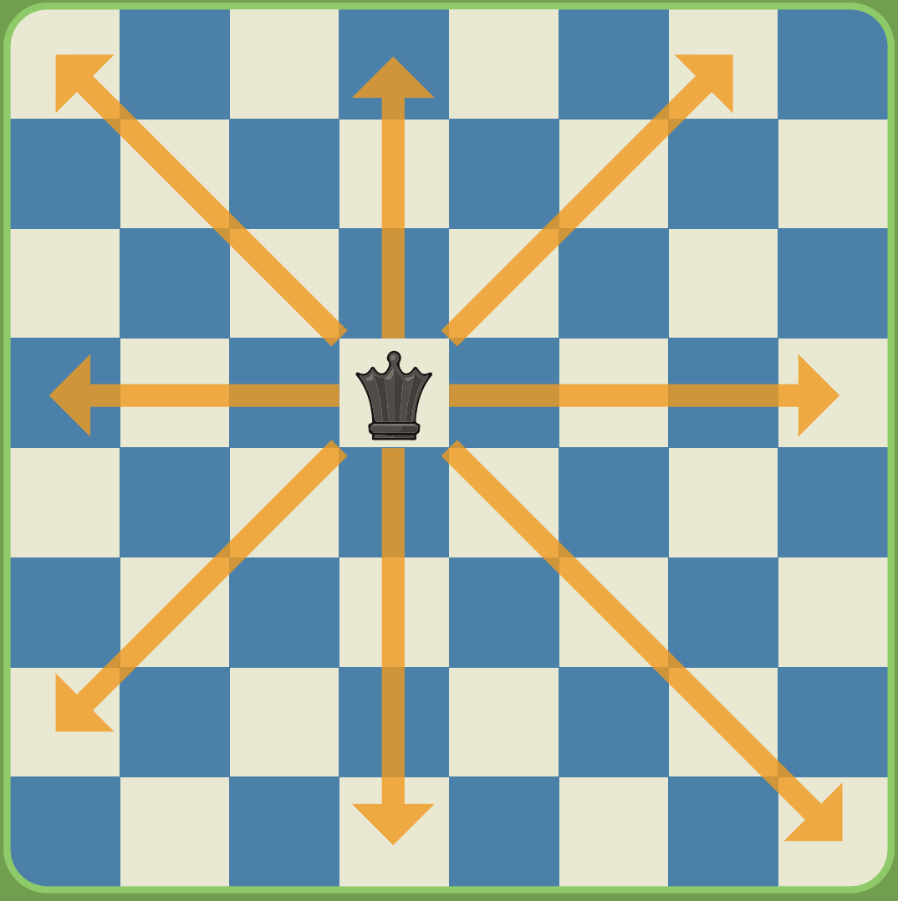
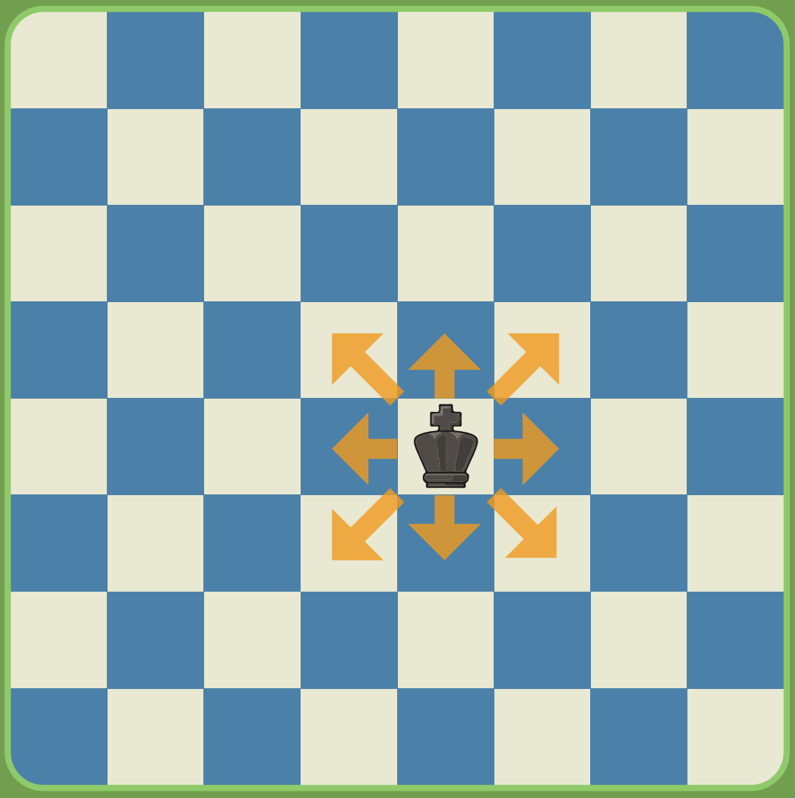

Learn to play
Learn the fundamentals of chess below
Chessboard
A chessboard consists of 64 squares arranged in an 8x8 grid. The horizontal rows are called “ranks” and are numbered 1-8. The vertical columns are called “files” and are labelled a-h from left to right. The squares alternate between white squares and black squares, following a checkered pattern.
Chess coordinate system called “algebraic notation” is used to communicate chess moves with ease. The system is concise, making games easier to record and understand for everyone. In addition, it allows for tracking of chess piece movement on each square uniquely. For example, the bottom-left square of whites perspective is a1, whilst the top-right is h8.
Using white's perspective and reflecting it for black, the white square should be in the bottom right corner for each player. The bottom-left square is a1 and the top-right square is h8. White pawns are placed on rank 2 and black pawns on rank 7. Rooks are placed in each corner with white pieces on a1 and a8, with black pieces on h1 and h8. Knights are placed in the same rank but in different files; white knights on a2 and a7, and black knights on h2 and h7. Bishops are placed in the same rank beside the knights going towards the center; white bishops on a3 and a5, and black bishops on h3 and h5. The queen goes on the colour matching her army; a white queen goes on a white square, a4, a black queen goes on a black square, h4. The king goes beside the queen and bishop on the opposing colour square, filling up the final slot.
Standard chessboard layout with algebraic notation
Chess Pieces & How They Work
Pawn
Moves forward one square, but on its first move it can move two squares. Captures pieces diagonally one square forward. When a pawn reaches the opposite end of the board, it promotes to any other piece (except king and pawn). The “En Passant” can occur when the opponent’s pawn moves two squares, the pawn can diagonally go past the piece, capturing without physically taking up the pawn's square.
Rook
Moves any number of squares horizontally or vertically. The rook has a special move called “castle” requiring the king or rook being switched to not have been moved or in check to perform.
Knight
Moves in an L-shape, two squares forward or vertically then one square perpendicular to that direction. The knight essentially ‘jumps’ over pieces, ignoring line of sight to move.
Bishop
Moves any number of square diagonally. Each bishop stays on the same colour square throughout the game.
Queen
Moves any number of squares horizontally, vertically, or diagonally. It combines the powers of the rook and bishop, typically considered the most powerful piece.
King
Moves one square in any direction. The king cannot move into check. Cannot castle when in check, through check, or already moved whether the king or rook trying to castle with. The game ends with the king being checkmated or stalemated for either player.
Chess Notation
Basic Notation Rules
Pieces are indicated by their uppercase letter: K (King), Q (Queen), R (Rook), B (Bishop), N (Knight). Pawns don't get a letter.
Captures are indicated with an "x": Bxe5 (Bishop captures on e5).
Check is indicated with a "+": Qh5+ (Queen moves to h5, giving check).
Checkmate is indicated with "#": Qh7# (Queen moves to h7, giving checkmate).
Castling is indicated by "O-O" for kingside castling and "O-O-O" for queenside castling.
Pawn promotion is indicated by adding the piece symbol after the move: e8=Q (pawn moves to e8 and promotes to Queen).
Example Move Notation
e4 - Pawn moves to e4
Nf3 - Knight moves to f3
Bxf7+ - Bishop captures on f7, giving check
exd5 - Pawn on the e file captures on d5

Example of a chess game in algebraic notation